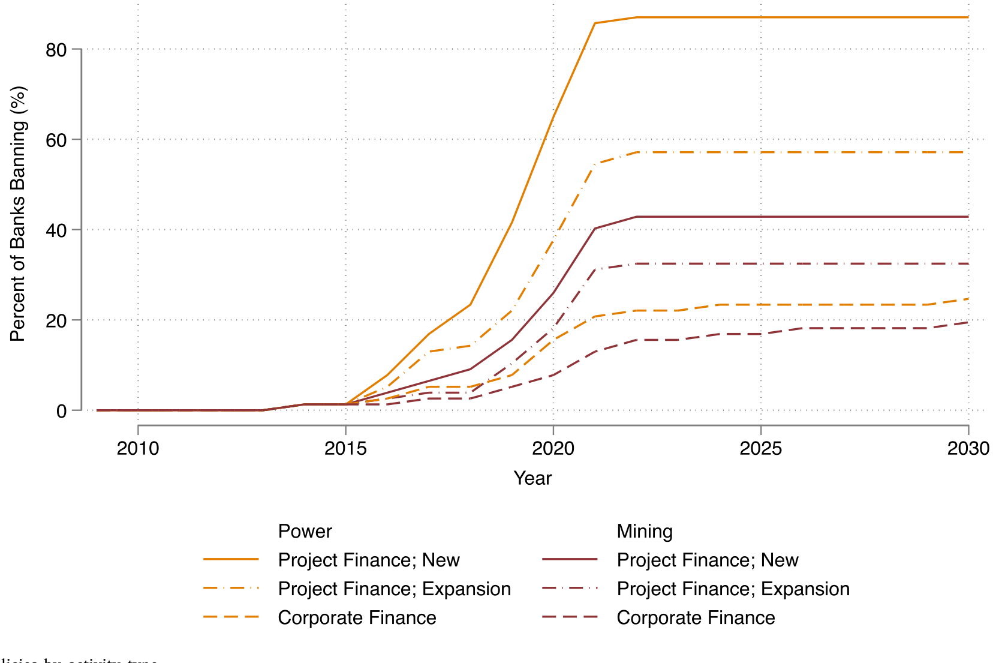
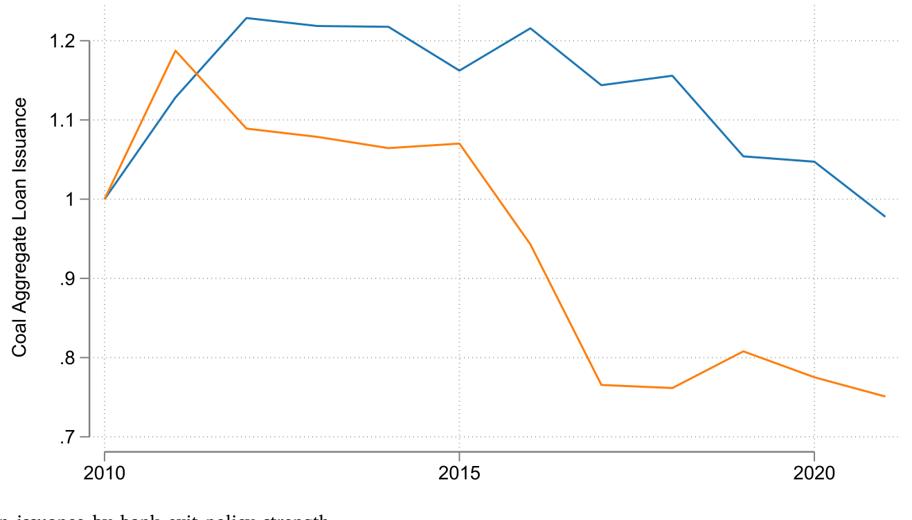
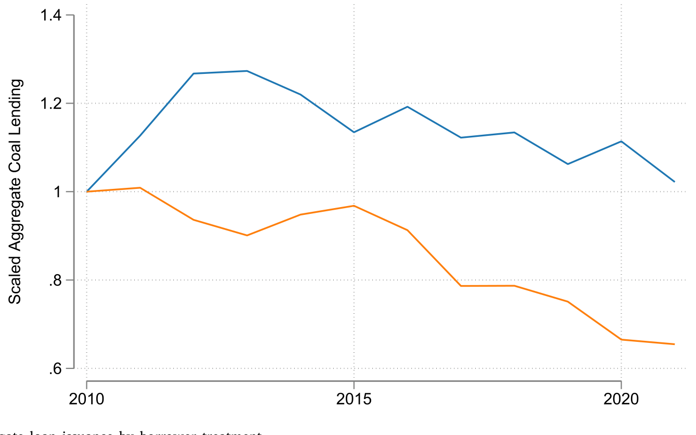
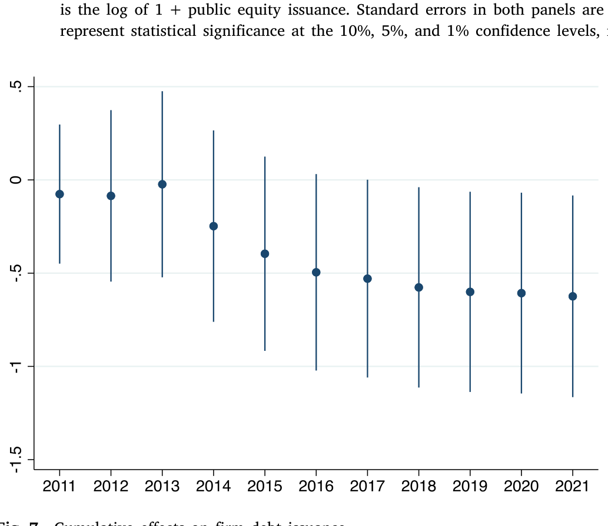
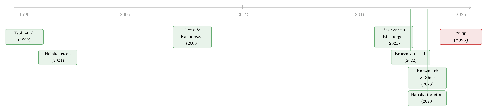

把煤矿的钱袋子勒紧：银行「退出政策」到底有没有用？
本文读的是 Green & Vallee (2025, Journal of Financial Economics)：作者用全球银行对煤炭业的「退出政策」当实验室，构造了一套政策强度的度量，再借助移位份额工具变量证明——这些政策真的勒紧了煤炭企业的钱袋子（一个标准差的暴露度对应年度债务发行下降约 20%），而且替代渠道几乎没有补上来，最终连煤电厂都更早退役、碳排放下降，估算累计减排 0.62 吉吨 CO2e。换句话说：在「资本高度可替代」的主流假设之外，存在一个退出政策真正奏效的角落。
1 引言：一句「我们银行关系很稳」背后的张力
先从一句话说起。2020 年，澳大利亚 Whitehaven Coal 的 CFO Kevin Ball 对外宣称：「我们的银行关系很稳，支持我们的人很多。对不熟悉煤炭的人来说，这或许有点意外。」可到了 2023 年，同一个人改口了：「作为一家煤炭生产商，要拿到外部融资越来越难。」
短短三年，一家煤企的口风从「我们不缺钱」变成了「我们快借不到钱」。中间发生了什么？发生的是，全球一大批银行陆续宣布了煤炭退出政策（exit policy）——承诺限制、逐步退出、乃至完全停止为煤炭项目和企业提供融资或承销。
这件事看上去理所当然：少了金主，煤企当然难受。但金融经济学里有一个根深蒂固的反对意见，而且它在理论上相当强硬：资本是高度可替代的（capital is substitutable）。只要市场上还有别的钱，某些金主退出，会有另一些金主补位，价格顶多稍微动一动，真实世界的产能、排放纹丝不动。Heinkel, Kraus and Zechner (2001)、Pastor et al. (2021)、Berk and van Binsbergen (2021) 这一脉的均衡资产定价模型反复说明：除非极大比例的投资者集体退出，否则「撤资」（divestment）对目标企业的资本成本影响小到可以忽略。
于是问题就尖锐了：银行的煤炭退出政策，到底是动真格的政策工具，还是一场漂亮的「漂绿」（greenwashing）公关？这正是本文要回答的核心问题——退出政策能不能真正约束目标企业，并最终改变它们的实际运营？
2 为什么是煤炭？——一个被精心挑选的「实验室」
要回答这个问题，作者没有泛泛地谈「ESG 撤资」，而是把镜头死死对准煤炭。这个选择不是偶然，而是整篇论文识别逻辑的第一块基石。
理论告诉我们，退出政策最可能奏效的场景有三个特征：目标行业资本密集、严重依赖外部融资、且融资市场摩擦很高。煤炭恰好把这三条全占了。它资本密集到什么程度？2021 年石油和煤炭产品的「资本占增加值份额」高达 81%；一座典型煤电厂能运行几十年，有的甚至超过 80 年。它依赖外部融资到什么程度？新建煤炭资产高度依赖银行中介的项目融资（project finance）——而项目融资既是地理上高度分割的市场，又以巨大的信息摩擦闻名。
接着，一个自然的问题是：为什么银行退出会比股市撤资更可能有效？答案在于摩擦。股票市场上，分散化动机带来的不完全替代效应很小（Hong and Kacperczyk, 2009 之后有大量争论）；但在银行中介的债务市场里，信息不对称会制造巨大的换行成本（Darmouni, 2020），地理或资本提供者类型上的分割（Becker, 2007；Mitchell et al., 2007）又会缩小能补位的资金池。只要这些摩擦足够大，即便退出的银行只是少数，政策依然可能有效。
更妙的是，煤炭这边退出的银行并不是「少数」。作者估算：那些已经采纳煤炭退出政策的银行，此前提供了煤炭行业债务融资的约 60%。半壁江山以上的金主集体转向——如果连这都激不起涟漪，那「退出政策无效」论才算真正立住；反过来，如果这里有效果，它对其他同样资本密集、依赖银行的行业（比如部分油气活动）也具备外部有效性。
3 第一步：把「退出政策」变成一个可以测量的数
这篇论文真正的硬功夫，藏在一个容易被忽略的环节：怎么把一纸声明变成一个数字？
退出政策五花八门——有的只针对新建煤矿，有的连存量煤电也不放过；有的设了营收占比阈值，有的按装机容量一刀切；有的留了大量例外条款，有的几乎没有缝隙。作者手工收集了全球银行的煤炭退出政策，构造出一套多维度的政策强度（policy strength）度量，刻画这些政策在覆盖范围、阈值、时间表上的丰富异质性。

Figure 3: Bank exit policies by activity type
有了强度，下一个问题是：什么样的银行更可能采纳、且采纳得更狠？结论很干净——银行规模是政策采纳与强度的首要决定因素。银行的 ESG 评级和所在地理位置也能解释一部分差异。但请注意一个关键的「零结果」：银行自身煤炭敞口的特征，并不能预测其政策强度。
这个零结果不是顺带一提，它是后面因果识别的护城河（理由见下一节）。
4 真正关键的一步：移位份额与那把「借款人—年份」的剪刀
现在到了全篇最要紧的地方——识别。
直接拿「银行采纳政策后对煤企放贷下降」做文章是危险的，因为这可能只是需求问题：也许是煤炭行业本身在萎缩，借得少了，跟政策无关。要把供给和需求分开，作者祭出了两把剪刀。
第一把，是在银行—企业—年份层面加入借款人—年份固定效应（borrower-year fixed effects）。同一家企业、同一年里，比较「强退出政策的银行」和「弱政策或无政策的银行」给它的融资。需求被固定效应吸收掉了——因为是同一家企业、同一年。结论是：强退出政策的银行，给同一家企业、同一年提供的融资显著更少。这就把「煤企自己不想借」的解释排除掉了。
但企业层面的总效应，才是我们真正关心的——一家企业被这些政策整体「围猎」之后，它的债务发行到底受多大影响？这就需要第二把剪刀：移位份额工具变量（shift-share / Bartik instrument）。
它的构造思路是这样的。先在政策采纳之前测量每家煤企的银行关系结构，再把这些关系份额，与各家银行后续退出政策的时间和强度加权组合起来，得到企业 \(i\) 在 \(t\) 年的「政策暴露度」：
$$ \text{Exposure}_{i,t} = \sum_{b} \omega_{i,b}\times \text{Strength}_{b,t} $$
这里 \(\omega_{i,b}\) 是企业 \(i\) 在政策前与银行 \(b\) 的融资关系份额（「份额」），\(\text{Strength}_{b,t}\) 是银行 \(b\) 在 \(t\) 年退出政策的强度（「移位」）。直觉非常朴素：如果你过去的金主里，有越大比例的人正在越激进地退出煤炭，你受到的冲击就越大。
那么这个工具凭什么能被解读为因果？按 Goldsmith-Pinkham et al. (2020) 的框架，识别假设是：在控制可观测变量后，企业对强退出政策的暴露度，只能通过「直接削减其可得信贷供给」这一条渠道与其债务发行的变化相关。作者用两点为这个假设辩护：
- 第一，主回归用了借款人国家×年份固定效应（borrower-country by year fixed effects），把同一国家、同一年里煤炭企业信贷需求的整体演变、以及政策强度在国家层面的变化都吸收掉了。
- 第二，也是回到上一节那个零结果——煤企的银行关系，与银行采纳强政策，是由两套互斥的因素决定的。政策强度可以被银行规模等因素预测，却无法被银行煤炭组合的既有趋势、或其煤炭客户的信贷增长所解释。换句话说，工具的「移位」部分没有被预先存在的趋势污染。
移位份额工具的可信度，本质上取决于「份额」是否外生于结果的潜在趋势。作者花大力气论证「政策强度不被煤炭组合特征预测」，正是在为这把剪刀的刃口做担保——这是全篇识别策略里最值得细读的部分。
5 数据：把煤炭世界的每一笔钱都尽量找出来
识别再漂亮，也要数据撑得住。这里有一个极易被忽视、却足以毁掉整篇论文的隐忧：如果煤企转向了非标准融资渠道（比如非银），而你的数据看不见，你就会高估退出政策的效果。
为此，作者搭了一套近乎「地毯式」的数据集。样本起点是 NGO Urgewald 编制的全球煤炭退出名单（Global Coal Exit List, GCEL）——2021 年覆盖 935 家母公司，占全球年度煤炭产量的 85%、装机煤电容量的 82%。
债务融资这一侧，作者把多个数据库拼在一起：DealScan（银团贷款）、SDC Platinum（债券）、IJGlobal（能源资产项目融资）、再加 Pitchbook、Preqin、LCD 来捕捉非银融资。匹配后得到 486 家母公司、7,023 笔贷款 facility 和 12,886 只债券，覆盖 2005–2021 年。股票发行来自 SDC Platinum，共 801 笔、来自 177 家公司。财务报表来自 Orbis（2012–2020，818 家）。三者交集——同时有外部融资和财务数据的——有 352 家母公司，约占全球煤炭产量的 60%、煤电装机的 69%。
把非银也纳进来这一步至关重要：它让「我们没看到替代，是因为我们没看那些渠道」这条反驳失去了立足点。
6 主要结果：钱袋子被勒紧了，而且没人来补
现在揭晓答案。
第一，银行说到做到。 银行采纳煤炭政策后，其对煤企的信贷中介显著下降，且政策强度越高，下降越多。这一步呼应并推进了 Haushalter et al. (2023)：在一个全球样本里，政策的采纳与强度都能预测银行后续煤炭融资的萎缩。

Figure 5: Aggregate loan issuance by bank exit policy strength
第二，企业层面的冲击很大。 用移位份额做面板回归，暴露度每上升一个标准差，企业年度债务发行下降约 20%。这个量级不小。而且效果在小企业、采矿类企业、以及业务高度集中于煤炭的企业身上更明显——与「财务约束更紧、替代更难者受冲击更大」的预期完全一致。受冲击的借款人，其长期债务的整体水平也随之下降。

Figure 6: Aggregate loan issuance by borrower treatment
第三，也是最反直觉的一点：替代几乎没有发生。 标准公司金融理论会预测，债务被配给时，企业要么转向非退出的银行、要么建立新银行关系、要么干脆去发股票。但作者发现：向非银有一点替代，可奈何非银本来的占比就低，绝对量级很小；没有系统性地转向非退出银行，没有形成新的银行关系，也没有明显转向股票发行。这与 Sachdeva et al. (2023) 形成鲜明对照——后者研究美国「扼喉行动」（Operation Choke Point）时发现企业能近乎完美地换到新资金来源。差别在哪？在于退出银行的覆盖面：当只有一小撮银行退出时，替代轻而易举；而在煤炭这里，多数银行都退了，补位的人就不够了。

Figure 7: Cumulative effects on firm debt issuance. the interaction between year fixed effects and the previously used
第四，真实效应落地了。 暴露度更高的借款人，总资产收缩。更引人注目的是：在一个大样本的煤电厂里，母公司暴露度更高的电厂，在 2015 年《巴黎协定》之后更可能被退役（decommissioned）。碳排放随之下降——既来自电厂关停，也来自在运电厂因利用率下降而减排。一个信封背面的估算给出了最终的「成绩单」：2015–2021 年间，银行退出政策累计减排 0.62 吉吨 CO2e，约等于 12.5 百万辆汽油车一生的排放量。
（关于一个煤炭产业退场如何把账单转嫁给普通人，可参见《煤矿衰落里的「金丝雀」：一个产业退场，账单落到了谁的信用分上》。）
7 文献脉络：从「撤资无用论」到「在对的地方撤资有用」
把这篇论文放进它所在的对话里，故事会更清楚。
最早的实证起点是悲观的。Teoh, Welch and Wazzan (1999) 研究南非种族隔离时期的股权抵制，发现对目标企业价值的影响微乎其微。理论上，Heinkel, Kraus and Zechner (2001) 给出了为什么——在均衡里，撤资带来的资本成本上升很小。这一脉一直延续到 Pastor et al. (2021) 和 Berk and van Binsbergen (2021)：后者直接得出 ESG 动机的股权撤资对目标企业资本成本和真实投资「没有可察觉的影响」。

接着，一个更精细的问题被提出来：撤资无效，是因为「撤资」这件事本身无效，还是因为做法（design）不对？Broccardo, Hart and Zingales (2022) 用「退出 vs. 发声」（exit versus voice）的框架论证：撤资因为资本可替代而相对无力，而行动主义/投票可能更有效。Edmans et al. (2022) 进一步指出「倾斜」（tilting）策略可能比一刀切的行业撤资更有冲击力。而 Hartzmark and Shue (2023) 提醒我们：任何资本配给只有在目标企业的产出对资本成本敏感时才有真实效应，而「棕色」企业的排放恰恰对资本成本相当敏感。
债务市场这边的证据则一直是混合的。Sachdeva et al. (2023) 发现被「扼喉行动」波及的企业能完美换到新资金；Sastry et al. (2023) 发现宣布气候承诺的银行并不比别人撤得更多；Kacperczyk and Peydró (2022) 发现加入 SBTi 的银行确实影响了借款人融资，却没带来环境结果的改善（这一点和 Pastor et al. (2023) 「绿色倾斜」那条线的疑虑相通，详见《三万五千亿美元的 ESG，到底「倾斜」了多少？》）。离本文最近的是 Haushalter et al. (2023)：针对山顶移除式采煤的退出政策，只有在银行面临显著公众监督时才真的减少放贷——暗示退出政策有时只是漂绿。
本文站在这条脉络的收口处：它不否定「资本可替代」，而是论证存在一个资本不可替代、退出因此有效的角落，并把这个角落的边界条件讲清楚——精准、可核验、且作用机制明确的退出政策，配上一个摩擦高、外部融资依赖深的目标行业，就能真正改变结果。 这与 ESG 信贷里那种「价格信号被合谋稀释」的故事恰成对照（参见《给「绿色」贴个标签，到底值多少钱？》）。
8 评论与延伸（Q&A + 研究方向）
Q：移位份额工具的「份额」会不会本身就内生？比如煤企早就预见到要被退出，提前换了银行？
这是最该担心的点。作者的防线是把份额测在政策采纳之前，并论证政策强度无法被银行煤炭组合的既有特征或其客户的信贷趋势预测——即「移位」部分外生。但严格说，识别仍依赖「条件可观测下、暴露度只通过信贷供给渠道影响结果」这一不可检验的假设；借款人国家×年份固定效应缓解了大部分国家层面的混淆，残余的企业层面预期调整无法完全排除。
Q：20% 的债务发行下降，会不会只是把融资从「可见渠道」挤到了「不可见渠道」？
这正是作者把 Pitchbook/Preqin/LCD 等非银数据塞进来的原因。在能观测的范围内，向非银的替代量级很小，向非退出银行和股权的替代基本不存在。当然，完全表外的、私人的安排原则上仍可能漏掉，但作者已经把主流的非标准渠道尽量覆盖了。
Q：和 Sachdeva et al. (2023) 的「完美替代」结论矛盾吗？
不矛盾，反而互补。关键变量是退出方的覆盖面。「扼喉行动」里只有一小撮放贷方收手，企业轻松换人；煤炭这里多数银行集体退出，补位的资金池被抽干，替代才失灵。两篇合起来给出一个清晰的政策含义：退出要有效，参与方必须足够广。
Q：减排 0.62 吉吨，是不是把煤搬到别处烧了（leakage）而非真减少？
作者引用 Andonov and Rauh (2023) 与 Darmouni and Zhang (2024) 论证发电领域的「泄漏」证据有限，并指出减排既来自电厂退役、也来自在运电厂利用率下降。但「泄漏」是这类研究的永恒软肋，跨境、跨所有权的产能转移很难被一国样本完全捕捉。Duchin et al. (2025) 就发现污染资产被卖出后排放不变——这个警告值得记在心里。
Q：这套结论能外推到油气吗？
作者自己很审慎。油气的外部资金池更深、盈利更强（可内部融资），物理上也更难替代，因此资本可替代性大概率显著高于煤炭。但像加拿大油砂这类「类煤炭」活动——外部性大、开采成本高、放贷方有限——的确具备一定外部有效性。
Q：既然银行「说到做到」，会不会只是把不赚钱的煤炭客户顺势甩掉，借气候之名行风控之实？
不能完全排除，但作者的设计部分缓解了它：政策强度不被银行煤炭组合的盈利/风险特征预测，且效应在借款人—年份固定效应下依然存在（即同一企业同一年，强政策银行借得更少）。若纯是风控，难以解释为何偏偏沿「政策强度」这条维度切得这么齐。
接下来是几个本文自然引出的研究方向。
(1) 把镜头转向公司债二级市场的流动性
- 【经济故事】本文证明了一级市场（债务发行）被勒紧，但退出政策会不会同时抽走煤炭债券在二级市场的做市与持有意愿，从而推高流动性溢价？如果做市商和长期持有人同步退出，受影响煤企的存量债券买卖价差可能系统性走阔。
- 【可行性】中。需要 TRACE 级别的成交数据匹配 GCEL 发行人，识别可沿用本文的暴露度构造做事件研究。难点在于煤炭债券样本相对薄、跨境券种数据分散。
(2) 外资持有人 vs. 本土持有人的退出弹性差异
- 【经济故事】退出政策的有效性取决于「谁退、谁能补位」。一个自然的细分是：当退出的是外资银行/外资持有人时，本土资金能否补位？反之呢？这直接关系到资本市场分割（Becker, 2007）在跨境维度上的形态。
- 【可行性】中高。可在本文的银行—企业关系数据上叠加银行国籍维度，构造「外资暴露度」与「本土暴露度」两个移位份额工具，比较对债务发行的差异化冲击。识别逻辑现成，主要工作量在银行国籍与监管辖区的细致归类。
(3) 退出政策的「精确度」如何定价
- 【经济故事】本文的大主题是「精准、可核验的政策才有效」。能否把政策文本的精确度/漏洞程度进一步量化（例如阈值清晰度、例外条款密度），检验同等强度下、更「严丝合缝」的政策是否带来更大真实效应？这把 Haushalter et al. (2023) 的「公众监督」机制推进一步。
- 【可行性】中。需要对政策文本做结构化编码（可借助大模型抽取条款），再与减排/退役结果对接。挑战在于文本编码的主观性与一致性。
(4) 受冲击煤企的劳动力与地方溢出
- 【经济故事】钱袋子被勒紧、资产收缩、电厂退役之后，账单会落到工人和社区身上。这与煤炭产业退场对家庭信用的影响是同一枚硬币的两面。
- 【可行性】中。需把企业层面的暴露度映射到设施所在地，再匹配地方就业/信用数据，做地理层面的差分。识别可借本文的暴露度，难点是把母公司冲击下沉到设施和社区。
9 我的判断
先说贡献。这篇论文最大的价值，不在于「证明退出政策有效」这个结论本身，而在于它把『何时有效』的边界条件钉死了：精准目标 + 高摩擦行业 + 广覆盖的退出方。它同时漂亮地解决了这类研究的两个老大难——一是用借款人—年份固定效应把需求摘干净，二是用近乎地毯式的非银数据堵住「替代被漏看」的反驳。在一片「撤资无用」与「漂绿」的怀疑声里，它给出了一个可信的反例，并且没有把反例吹成普适规律，这份克制本身就很可贵。
再说担忧。其一，移位份额的识别终究压在「暴露度仅通过信贷供给渠道影响结果」这条不可检验的排他性假设上；作者的辩护扎实，但企业对未来融资环境的前瞻性调整很难被完全固定效应吸收。其二，0.62 吉吨这个抓眼球的数字，依赖一连串信封背面的假设，对泄漏尤其敏感——一国样本看不到的跨境产能转移，可能让净减排打折扣。其三，「银行说到做到」与「银行借气候之名做风控」在观测上不易完全区分，尽管作者的设计已大幅缩小了这个缝隙。
最后说我想看到什么。我最想看的，是把这套框架搬到公司债二级市场流动性和外资 vs. 本土持有人两个维度上去（见上文研究方向 1、2）。本文已经把一级市场的供给冲击讲透了，下一步真正有意思的问题是：当一群金主集体离场，留下来的市场，它的价格、它的深度、它的做市能力会怎样重新定价？这才是「退出」二字在信用市场里最深远的回响。
参考文献
- Berk, J., van Binsbergen, J.H. (2021). The impact of impact investing. Available at SSRN 3909166.
- Becker, B. (2007). Geographical segmentation of US capital markets. Journal of Financial Economics 85(1), 151–178.
- Broccardo, E., Hart, O., Zingales, L. (2022). Exit versus voice. Journal of Political Economy 130(12), 3101–3145.
- Darmouni, O. (2020). Informational frictions and the credit crunch. Journal of Finance 75(4), 2055–2094.
- Darmouni, O., Zhang, Y. (2024). Brown capital (re)allocation. Available at SSRN 4796331.
- Duchin, R., Gao, J., Xu, Q. (2025). Sustainability or greenwashing: Evidence from the asset market for industrial pollution. Journal of Finance 80(2), 699–754.
- Edmans, A., Levit, D., Schneemeier, J. (2022). Socially responsible divestment. ECGI Finance Working Paper.
- Goldsmith-Pinkham, P., Sorkin, I., Swift, H. (2020). Bartik instruments: What, when, why, and how. American Economic Review 110(8), 2586–2624.
- Green, D., Vallee, B. (2025). Measurement and effects of bank exit policies. Journal of Financial Economics 172, 104129.
- Hartzmark, S.M., Shue, K. (2023). Counterproductive sustainable investing: The impact elasticity of brown and green firms. Working Paper.
- Haushalter, D., Henry, J.J., Iliev, P. (2023). Can banks save mountains? Review of Corporate Finance Studies.
- Heinkel, R., Kraus, A., Zechner, J. (2001). The effect of green investment on corporate behavior. Journal of Financial and Quantitative Analysis 36(4), 431–449.
- Hong, H., Kacperczyk, M. (2009). The price of sin: The effects of social norms on markets. Journal of Financial Economics 93(1), 15–36.
- Kacperczyk, M.T., Peydró, J.-L. (2022). Carbon emissions and the bank-lending channel. Working Paper.
- Mitchell, M., Pedersen, L.H., Pulvino, T. (2007). Slow moving capital. American Economic Review 97(2), 215–220.
- Pastor, L., Stambaugh, R.F., Taylor, L.A. (2021). Sustainable investing in equilibrium. Journal of Financial Economics 142(2), 550–571.
- Pastor, L., Stambaugh, R.F., Taylor, L.A. (2023). Green tilts. NBER Working Paper No. w31320.
- Sachdeva, K., Silva, A., Slutzky, P., Xu, B. (2023). Defunding controversial industries: Can targeted credit rationing choke firms? Working Paper.
- Sastry, P., Marques-Ibanez, D., Verner, E. (2023). Business as usual: Bank climate commitments, lending, and engagement. Working Paper.
- Teoh, S.H., Welch, I., Wazzan, C.P. (1999). The effect of socially activist investment policies on the financial markets: Evidence from the South African boycott. Journal of Business 72(1), 35–89.